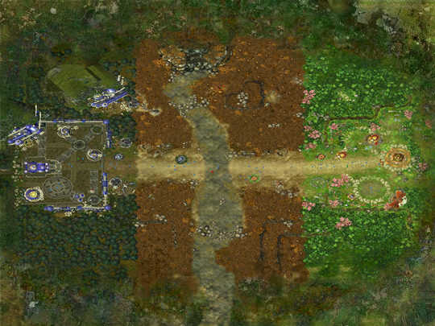

地图 05｜教学、人机练习与开发测试如何区分
原版教学不只有一张地图或一个入口。主地图列表中有三项生产允许的单人教学配置：经典 MOBA 场景上的《初次进攻》，以及专用教学场景上的第一章《初次进攻》和第二章《推进攻势》。同名的两项《初次进攻》不是重复文件误差，而是不同场景与脚本流程。另有经典边境之地《练习》，其类型是人机训练。来源：Data/Maps/_.MAPLST.xdb、Data/Maps/Multiplayer/MOBA/Tutorial/_.ADMPDSCR.xdb、Data/Maps/Tutorial/_1.ADMPDSCR.xdb、Data/Maps/Tutorial/_2.ADMPDSCR.xdb、Data/Maps/Multiplayer/MOBA/Training.ADMPDSCR.xdb。
1. 经典地图教学：带玩家完成真实目标链
这一版教学直接使用经典三路 MOBA 场景，单人控制英雄，其他英雄由配置与 AI 提供。地图保留经典塔、兵营、旗杆、野区、首领、商店与小游戏建筑，但脚本会调整敌方建筑、英雄和提示条件，不能用该教学的承伤体验反推普通对战数值。
其主线顺序明确：离开基地 → 摧毁敌方第一座塔 → 清除一条线上的全部塔 → 摧毁该路兵营／军械库 → 摧毁敌方主建筑。原始任务文本对双方主建筑分别使用“艺术神殿”和“科学神殿”；这是阵营表现名称，终局设计功能均为对方核心。来源：Data/Maps/Multiplayer/MOBA/Tutorial/questListTutorial.QUESTS.xdb、Data/GameLogic/Scripts/TutorialMOBA.lua。
| 教学层 | 要教会玩家什么 | 触发方式／完成动作 |
|---|---|---|
| 主目标 | 一局究竟如何获胜 | 按建筑目标链推进，而不是刷到某个击杀数 |
| 初次成长 | Prime 如何转成已激活天赋 | 激活天赋、使用天赋、检测玩家有资源却未购买的情况 |
| 兵线资源 | 士兵是持续成长来源 | 击杀指定数量敌兵；任务计数为 5 |
| 生存与回场 | 残血时如何处理 | 低生命提示、使用传送、第一次阵亡提示 |
| 地图控制 | 土地和旗杆为何重要 | 接近／升旗相关提示，解释前线改变 |
| 野区系统 | 普通怪、首领和符文分别是什么 | 接近野怪、猫首领、龙首领或符文时给提示 |
| 后方功能 | 商店与小游戏有什么作用 | 接近商店；进入小游戏并创建卷轴 |
| 团队战斗 | 击杀、助攻、敌方威胁 | 监听敌英雄击杀／助攻、塔攻击和队友防御塔受袭 |
提示是条件驱动，不是进入地图就一次弹出整页说明。例如玩家离开基地、靠近野怪、首次购买天赋、残血且未受攻击时分别触发不同反馈。主线保持清楚，支线教学随玩家实际行为插入，使“学一个操作”直接连接“用这个操作解决当前问题”。这是从脚本结构得到的策划分析。来源：Data/GameLogic/Scripts/TutorialMOBA.lua。
该配置开战等待为 0、塔脆弱性延迟为 10 秒、起始 Prime 每队 300、被动配置 2／秒，地图强度字段 125、训练强度系数 0.75。英雄覆盖中指定了玩家及两边 AI 的英雄资源；因此人数字段 1 表示单人教程，并不意味着场上只有两个英雄。来源：Data/Maps/Multiplayer/MOBA/Tutorial/_.ADMPDSCR.xdb、Data/Maps/Multiplayer/MOBA/Tutorial/_.ADMPSTTN.xdb。
2. 专用教学第一章：把基础操作连接到建筑目标

原图：Data/UI/Styles/MiniMap/Tutorial/_N.dds。专用场景为 26×26 地形块、520×520 寻路格，横向连接两侧基地；静态有 6 座塔、6 座兵营、2 座核心、3 根旗，脚本按教学阶段控制参与战斗的物件。底图与前哨相似，不代表两者是同一场景或同一玩法。来源：Data/Maps/Tutorial/_.ADMP.xdb、Data/Maps/Tutorial/_.TERN.xdb。
第一章《初次进攻》的任务文本包含与阵营对应的引导角色会合，以及摧毁敌方神殿两条主目标。支线从观察环境、检查基地门、击败侦察兵开始，再依次接触使用天赋、杀士兵、摧毁塔、补刀、摧毁军械库、击败敌英雄、激活天赋等动作。脚本还有喝药教学、镜头操作提示和保持玩家存活的保护处理。来源：Data/Dialog/SessionTutorial/Mission1/questListTutorial1.QUESTS.xdb、Data/GameLogic/Scripts/Tutorial1.lua。
| 学习段 | 玩家完成的具体动作 | 与后续玩法的连接 |
|---|---|---|
| 观察与移动 | 看清环境、到达目标、检查门口 | 学会相机与位置移动，不先堆技能术语 |
| 第一次攻击 | 击败 2 名侦察兵、使用天赋 | 区分普攻与主动招式 |
| 成长资源 | 杀兵、完成补刀计数 5、激活天赋 | 说明击杀与成长操作的因果 |
| 推进目标 | 拆塔、拆军械库 | 将个人操作引入地图目标链 |
| 英雄对抗 | 击败敌方英雄 | 把已学技能用于另一类威胁 |
| 结束一局 | 摧毁敌方阵营神殿 | 教会最终胜利条件 |
这章起始 Prime 为 700，持续被动为 0，开场等待为 0。教程不是让玩家按正常对战节奏自然赚够全部资源；脚本会为教学服务控制内容和时机。配置、任务表与脚本应一起作为还原依据，不能只取任务表排序就认为运行顺序完全相同。来源：Data/Maps/Tutorial/_1.ADMPDSCR.xdb、Data/Maps/Tutorial/_1.ADMPSTTN.xdb。
3. 专用教学第二章：传送、商店、土地与团队交战
第二章《推进攻势》仍使用同一专用教学场景，起始 Prime 为 400，被动为 0。任务围绕救援友方英雄展开，进一步让玩家购买指定天赋、购买治疗药水、补刀 3 名士兵、使用传送、升起本方附近与中央旗杆、打败更强英雄，然后继续拆除边境塔、堡垒塔、军械库与敌方神殿。任务集中还包含击败两名敌英雄以及不同阵营命名的关键敌人。来源：Data/Maps/Tutorial/_2.ADMPDSCR.xdb、Data/Maps/Tutorial/_2.ADMPSTTN.xdb、Data/Dialog/SessionTutorial/Mission2/QuestsCollectionTutorial2.QUESTS.xdb、Data/GameLogic/Scripts/Tutorial2.lua。
| 新增认知 | 原版通过什么任务展示 | 设计意义 |
|---|---|---|
| 补给与准备 | 商店购买治疗药水、购买指定天赋 | 资源支出服务于后续战斗需求 |
| 返回与转移 | 使用传送天赋 | 让玩家知道不必一直步行退回或硬撑残血 |
| 土地优势 | 升起近基地旗与中央旗 | 用前后两个旗的位置建立前线概念 |
| 对强敌的处理 | 击败更强英雄、应对敌方组合 | 通过盟友、地点与技能时机处理数值压力 |
| 更完整推进 | 边境塔、堡垒塔、兵营、主建筑 | 将第一章认识的目标链再完整使用一次 |
复核批注：同一个任务集合包含阵营、玩家性别或剧情分支的替代文案，不能把它们全部算作独立必做任务。正文按设计功能合并说明，原始任务 ID 与文本保留在源资源中。需要复刻逐条弹窗时，应沿脚本条件选择对应文本，而非按目录一次全显示。
4. 人机练习：完整对战结构中的低压入口
《练习》不是教学第三章。它使用经典 MOBA 场景，类型为 Training，战斗编制每方 5 个槽位，说明是与电脑对战。其起始 Prime 每队 2000、被动 4／秒等来自经典设置，同时有训练设置与 1.38 的训练强度系数。没有证据支持把这个系数直接翻译为“所有敌人的血量、伤害都增加 38%”；具体应用应结合训练规则。来源：Data/Maps/Multiplayer/MOBA/Training.ADMPDSCR.xdb、Data/Maps/Multiplayer/MOBA/Training.ADMPSTTN.xdb。
从学习路线看，教程用强引导让玩家完成一次完整行为链，练习则让玩家在标准空间结构中重复操作、试验英雄和天赋。两者的要求不同：教程需要防止关键教学步骤断裂；练习需要让玩家承受更接近一般对局的兵线与目标反馈。这里是设计分析，不宣称原版有额外未核实的排位解锁条件。
旧 PFmap 族另有一项练习配置，但不在本版主地图列表。平面测试图也有一个名为 Training 的开发入口，它禁止生产环境，并非玩家人机练习的新场景。
5. 开发测试与 PvE 原型：逐个记录，不伪造公开规则
下面列出 12 个以开发／原型为主的不同场景；其中平面图有三个入口，所以对应开发配置合计更多。另有各对战模式的 1 对 1、2 对 2、3 对 3 测试变体，以及队伍测试、节日测试，已在完整目录逐项列出。
| 场景 | 已核空间内容 | 用途判断 | 胜负与人数如何记录 |
|---|---|---|---|
| 地牢 1 | 40×40 地形块，37 中立刷怪点，2 英雄占位 | PvE 地牢原型 | 描述仍带默认 PvP／每队 5；占位与默认值不一致，不据此宣布可玩 5 对 5 |
| 地牢 2 | 40×40，16 中立刷怪点，10 英雄占位 | 标题写五人 PvE 的原型 | 无标准塔／核心，不补造完整通关目标 |
| 小兵测试地图 | 30×30，2 英雄占位、2 商店 | 生物／场景测试 | 无完整对战目标链 |
| PvE 测试 1 | 20×20，46 中立刷怪点 | PvE 敌军试验场 | 不等同正式单人试炼 |
| 平衡测试 | 16×16，2 核心、21 中立刷怪点、3 旗、2 阵营刷兵点 | 数值与交互验证 | 保留默认编制，属于开发入口 |
| 合作生物测试 | 30×30，32 中立刷怪点、3 旗、10 符文点 | 合作敌军验证 | 不等同五人合作完整任务脚本 |
| 设计与美术测试 | 20×20，2 塔、2 核心、3 旗 | 小型资产与规则验证 | 无生产入口许可 |
| 决斗测试 | 16×16，2 内嵌核心、2 中立刷怪点 | 对抗试验 | 名字叫决斗，但每队人数默认仍为 5；不能擅改成已核 1 对 1 |
| 平面测试 | 8×8 地形块，2 核心、2 中立点、2 小游戏建筑等 | 通用交互平面场 | 有 1 对 1、2 对 2、训练三个主列表测试入口，均禁止生产 |
| 样条测试 | 16×16，2 核心、2 直接放置生物 | 地形／样条验证 | 不据物件数量推断一套公开模式 |
| 地形测试 | 8×8，主要为空地形验证内容 | 纯地形试验 | 没有组成标准战斗目标 |
| 5 对 5 测试 | 8×8，10 英雄占位、2 核心、2 内嵌刷兵点 | 多人基础验证 | 是测试场，不是缩小版正式边境 |
各项直接来源与摆放计数见《地图附录》B11—B24 对应场景；其中合作和剧情场景夹在同一目录排序中，应按名称而非连续编号识别。所有 83 个描述配置均有逐项来源链接，没有将开发图丢弃或算作新的正式模式。
6. 还原教学时的边界
原版教学中存在强制镜头、对话等待、临时不死、区域限制、AI 行为调整与天赋窗口控制。这些是关卡教学工具，不是普通 PvP 的通用规则。玩家在教程里能扛住更多攻击、敌人暂时不追击、某个目标被保护，都必须结合脚本状态理解。反过来，重制中若保留经典普通战斗数值而删除这些教学保护，也可能导致教程目标无法完成。
因此本稿把“普通模式规则”和“教程阶段例外”分别写明。原版资源可以提供教学目标、反馈触发与例外时机；新的教学长度、难度、提示文案风格，需要在后续设计中另行决定，而不是把当前研究中的空缺补成原版事实。